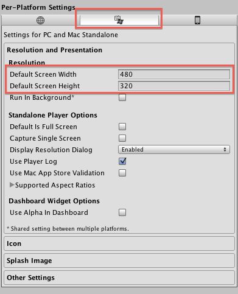
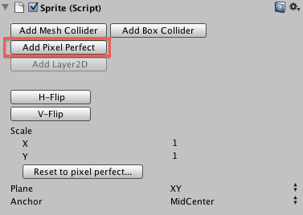
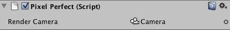

ex2D provide two way to adjust Sprite for pixel perfect. The Reset to pixel perfect button in Sprite and SpriteFont component. The PixelPerfect component.
This button can be found in the inspector in Sprite/SpriteFont component. When you click the button, it treat the main camera as the pixel-perfect camera, and it use PlayerSettings.defaultScreenWidth and PlayerSettings.defaultScreenHeight as the target screen width and height, then it calculate the scale of the sprite/sprite font to become pixel-perfect in the target screen.
You can set the value of PlayerSettings.defaultScreenWidth and PlayerSettings.defaultScreenHeight through Menu > Edit > Project Settings > Player. Click the PC and Mac standalone settings, and you will find Default Screen Width/Height for editing.

You can add a PixelPerfect component by click the Add Pixel Perfect button in the inspector of Sprite/SpriteFont component.

When finish adding, a PixelPerfect component will show in your Inspector.

The component allows you specific a camera as target camera.
In the editor, it takes PlayerSettings.defaultScreenWidth and PlayerSettings.defaultScreenHeight as target screen width and height. When running the Game (in both standalone and editor), it takes Game window width and height directly.